library(tidyverse)
library(ggplot2)
library(googlesheets4)
library(lubridate)
library(stringr)
library(dplyr)
library(plotly)
knitr::opts_chunk$set(echo = TRUE, warning=FALSE, message=FALSE)An Analysis of Seasonality on Mass Shootings
final project
Final Project
Introduction
It seems as though every week, or every day, there is another mass shooting at the top of news headlines. While many have tried to explain what it is that causes this seeming increase in mass shootings in the United States (U.S.), from violence in video games, lack of gun control, or the mental health crisis, the picture of what is going on is still unclear. For this project, I am interested in trends in U.S. mass shootings, for instance, when and where they are most likely to occur, and hypothesizing why these trends occur.
To conduct this exploratory data analysis, I used mass shooting data from the Gun Violence Archive (GVA). Since 2014, the Gun Violence Archive has manually compiled a ledger of incidences of gun violence in the U.S. (Gun Violence Archive, 2022b). To compile these lists, the GVA triangulates “law enforcement, government, and media sources” (Gun Violence Archive, 2022b). As there is no standard definition for mass shootings, for this project I used the GVA’s definition of mass shooting; four or more people (not including the perpetrator) are shot or killed (Gun Violence Archive, 2022b).
I joined 9 data sets from the GVA, one for each year 2014 to 2022. The 2022 data included in this analysis goes up until August 27, 2022, the day I read in the data set.
Because of the potential of reporting error over the years/media sensationalizing of shooting incidences over time, generally, I will avoid looking at trends over the years and look at trends across months of the year.
Reading In the Data
gs4_deauth()
#creating a vector of new column names
mass_names<- c("incident_id", "incident_date", "state", "city_or_county", "address", "number_killed", "number_injured", "delete")
#creating a function to read in the data sets with new column names, skip the first row, remove the "operation" column which contains links to news articles in the original data source, and create a "Year" column for ease of analysis
read_shootings<-function(sheet_name){read_sheet("https://docs.google.com/spreadsheets/d/1rCnIYPQSkcZDCulp5KXAxmZUBad4QtrERi4_7tUMXqs/edit?usp=sharing",
sheet=sheet_name,
col_names=mass_names,
skip=1) %>%
mutate("YearSheet"=sheet_name) %>%
mutate(Year=recode(YearSheet, "MassShootings2014"="2014", "MassShootings2015"="2015", "MassShootings2016"="2016", "MassShootings2017"="2017", "MassShootings2018"="2018", "MassShootings2019"="2019", "MassShootings2020"="2020", "MassShootings2021"="2021", "MassShootings2022"="2022")) %>%
select(-delete, -YearSheet)
}
#using purrr/map_dfr to join data sheets for 2014 through 2022, applying the function read_shootings for consistent formatting
mass_shootings_all <- map_dfr(
sheet_names("https://docs.google.com/spreadsheets/d/1rCnIYPQSkcZDCulp5KXAxmZUBad4QtrERi4_7tUMXqs/edit?usp=sharing")[1:9],
read_shootings)
mass_shootings_all# A tibble: 3,835 × 8
incident_id incident_date state city_…¹ address numbe…² numbe…³ Year
<dbl> <dttm> <chr> <chr> <chr> <dbl> <dbl> <chr>
1 271363 2014-12-29 00:00:00 Louisi… New Or… Poydra… 0 4 2014
2 269679 2014-12-27 00:00:00 Califo… Los An… 8800 b… 1 3 2014
3 270036 2014-12-27 00:00:00 Califo… Sacram… 4000 b… 0 4 2014
4 269167 2014-12-26 00:00:00 Illino… East S… 2500 b… 1 3 2014
5 268598 2014-12-24 00:00:00 Missou… Saint … 18th a… 1 3 2014
6 267792 2014-12-23 00:00:00 Kentuc… Winche… 260 Ox… 1 3 2014
7 268282 2014-12-22 00:00:00 Michig… Detroit Charle… 1 3 2014
8 282186 2014-12-22 00:00:00 New Yo… Webster 191 La… 4 2 2014
9 267721 2014-12-22 00:00:00 Illino… Chicago 5700 b… 0 5 2014
10 266570 2014-12-21 00:00:00 Florida Saraso… 4034 N… 2 2 2014
# … with 3,825 more rows, and abbreviated variable names ¹city_or_county,
# ²number_killed, ³number_injured
# ℹ Use `print(n = ...)` to see more rowsAfter joining the sheets, I double checked that the number of rows in the google sheets added up to the number of rows in my joined data set above (minus 9 for the column names).
Tidying the Data
The initial data set includes an incident ID, the date in POSIXct format, state, city or county, the address of the incident, number killed, number injured, as well as the “Year” column I created from the sheet names. The data is fairly tidy to begin with, each “case” is a particular shooting incident (uniquely defined by the incident ID) and has its own row, each variable (characteristic of the shooting) has its own column, and each value has it’s own cell. I still need to change the state column into “date” format, add a “month” column to use for analysis, and change the order of the columns to make more logical sense.
#converting incident_date from "POSIXct" to "date" format
mass_shootings_all$incident_date<-as.Date(mass_shootings_all$incident_date)
#creating a month column and converting to factors
mass_shootings_all<-mass_shootings_all%>%
mutate(month=as.factor(month(incident_date))) %>%
mutate(month=recode(month, `1`="Jan", `2`="Feb", `3`="Mar", `4`="Apr", `5`="May", `6`="Jun", `7`="Jul", `8`="Aug", `9`="Sept", `10`="Oct", `11`="Nov", `12`="Dec"))
#reordering the columns
mass_shootings_all<-mass_shootings_all %>%
select(c("incident_id", "incident_date", "Year", "month", "state", "city_or_county", "address", "number_killed", "number_injured"))
mass_shootings_all# A tibble: 3,835 × 9
incident_id incident_date Year month state city_…¹ address numbe…² numbe…³
<dbl> <date> <chr> <fct> <chr> <chr> <chr> <dbl> <dbl>
1 271363 2014-12-29 2014 Dec Louisi… New Or… Poydra… 0 4
2 269679 2014-12-27 2014 Dec Califo… Los An… 8800 b… 1 3
3 270036 2014-12-27 2014 Dec Califo… Sacram… 4000 b… 0 4
4 269167 2014-12-26 2014 Dec Illino… East S… 2500 b… 1 3
5 268598 2014-12-24 2014 Dec Missou… Saint … 18th a… 1 3
6 267792 2014-12-23 2014 Dec Kentuc… Winche… 260 Ox… 1 3
7 268282 2014-12-22 2014 Dec Michig… Detroit Charle… 1 3
8 282186 2014-12-22 2014 Dec New Yo… Webster 191 La… 4 2
9 267721 2014-12-22 2014 Dec Illino… Chicago 5700 b… 0 5
10 266570 2014-12-21 2014 Dec Florida Saraso… 4034 N… 2 2
# … with 3,825 more rows, and abbreviated variable names ¹city_or_county,
# ²number_killed, ³number_injured
# ℹ Use `print(n = ...)` to see more rows#saving an original copy of the tidied data set
mass_shootings_orig<-mass_shootings_allCreating Initial Plots by Year and Month
As mentioned in my introduction, I am interested in trends in mass shootings over time. To begin, I will look at how the number of mass shootings has changed by year across my data set, and then look at how the number of mass shootings varies across months of the year.
#creating histogram of shootings/year
ggplot(mass_shootings_all, aes(Year))+
geom_bar(stat="Count")+
labs(title="Figure 1: Number of Mass Shootings 2014-2022*", caption="*2022 data goes up to August 27, 2022", x="Month", y="Count")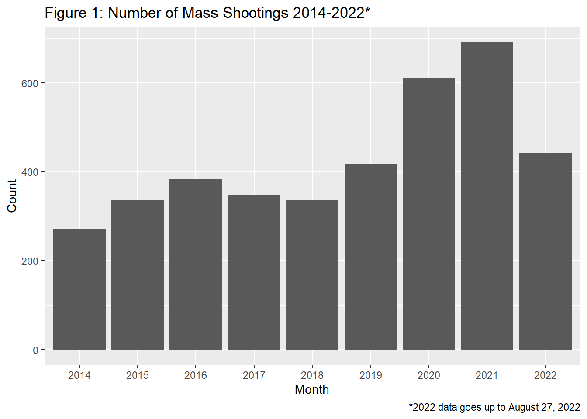
#creating line plot by year and month
ggplot(mass_shootings_all, aes(x=month, group=Year, color=Year))+
geom_line(stat="count")+
geom_point(stat="count")+
labs(title="Figure 2: Number of Mass Shootings by Month 2014-2022*", caption="*2022 data is only up until August 27, 2022", x="Month", y="Count")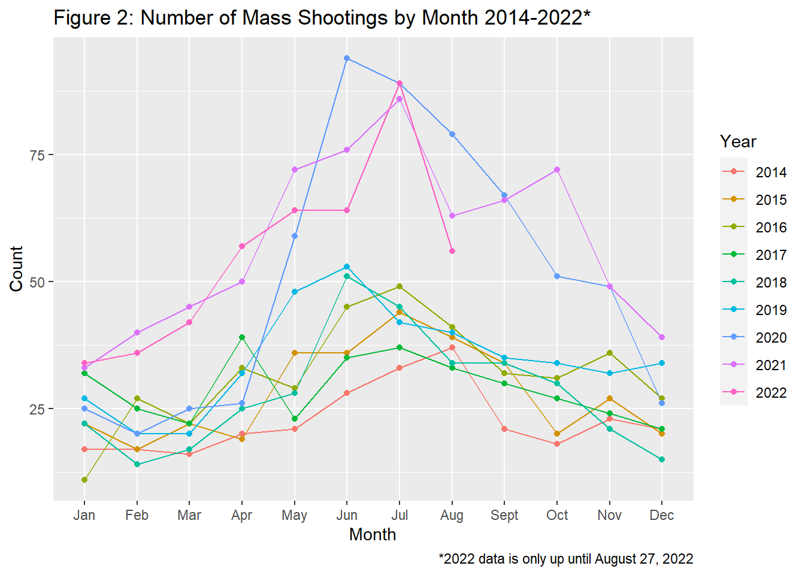
#excluding 2022 from the rest of the graphs so as to not affect the month distribution (for which we don't yet have Sept-Dec data)
mass_shootings_all<-filter(mass_shootings_all, Year!=2022)
#creating plot by month
ggplot(mass_shootings_all, aes(x=month))+
geom_point(stat="count")+geom_line(stat="count", group=1)+
labs(title="Figure 3: Number of Mass Shootings By Month (2014-2021)", x="Month", y="Count")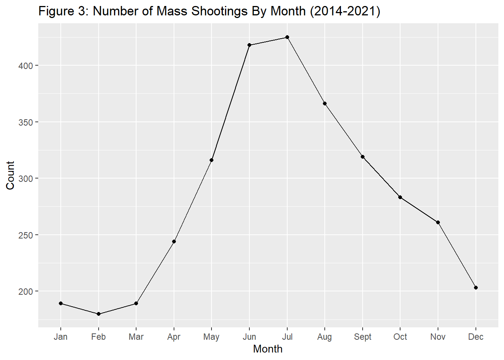
Figure 1 : I will not spend to much time analyzing this graph because of the issue I mentioned in the introduction. However, if mass shootings have accurately been reported/compiled in this data set, it does appear that mass shootings have generally been increasing since 2014, but especially in 2019, with a pretty large jump in 2020. This is surprising to me based on my experience with the news in 2020. I remember feeling like I was hearing of less shootings in 2020 than 2019. This data paints a different picture. One possible explanation could be that the media was more consumed with reporting COVID-19-related news during 2020.
Figure 2 : This graph actually expands on my thoughts about shootings in 2020. The 2020 line shows a massive increase in May and June 2020. This is right after the intial COVID-19 stay at home orders/guidelines in much of the U.S. in March 2020. Could this be, for lack of a better word, “pent-up demand” for mass shootings? There were less gatherings/ opportunities for mass shootings given the circumstances in March 2020, and perhaps more of an opportunity as restrictions relaxed in the summer. At the same time, it appears that most years also show an increase in shootings in June and July.
Figure 3 : This graph creates a more jarring picture of the possible seasonality of mass shootings. It appears that the most occur in June and July, with incidences increasing beginning in April and tapering down beginning in August.
After looking at these initial graphs I am curious, why do the most mass shootings occur in June and July? Is it temperature/seasonally dependent? According to a report from the U.S. Department of Justice, many criminal activities actually follow seasonal variations (2014). The report found that all types of criminal victimization in the study (property victimization, and other forms of violent crime) except robbery followed the trend of more crimes in the summer versus the winter (U.S. Department of Justice, 2014). However, the study did not provide explanations as to why this is the case (U.S. Department of Justice 2014).
Moving on, I am curious if mass shootings also follow these seasonal trends. I am also curious: if violence is temperature dependent, would states with more/less seasonal temperature variation follow the national trend? Below I look at FL and IL and create a plot for all states to see how well they follow the national trends:
Creating Plots by State
#Distribution of shootings by month in FL
filter(mass_shootings_all, state=="Florida") %>%
ggplot(aes(month))+geom_point(stat="Count")+geom_line(stat="count", group=1) +labs(title="Figure 4: Number of Mass Shootings By Month in Florida (2014-2021)", x="Month", y="Count")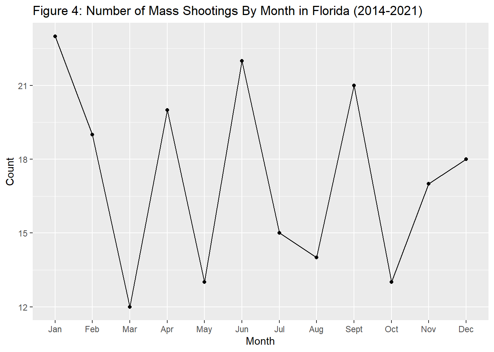
#Distribution of shootings by month in MA
filter(mass_shootings_all, state=="Massachusetts") %>%
ggplot(aes(month))+geom_point(stat="Count")+geom_line(stat="count", group=1)+labs(title="Figure 5: Mass Shootings By Month in Massachusetts (2014-2021)", x="Month", y="Count")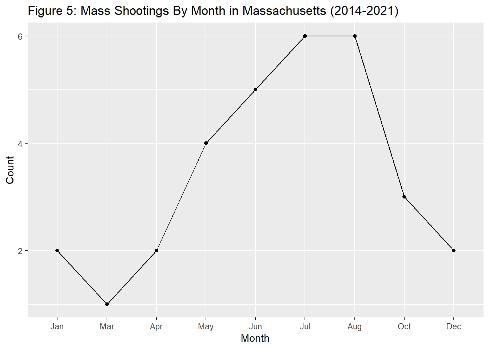
#Mass has some months where count=0, which is omitted from the histogram when filtering out mass. Below I created a table and then created a bar graph from this to preserve the months where count=0
mass_shootings_all_mass<-filter(mass_shootings_all, state=="Massachusetts") %>%
group_by(month, .drop=FALSE) %>%
summarise(Count = n())
mass_shootings_all_mass# A tibble: 12 × 2
month Count
<fct> <int>
1 Jan 2
2 Feb 0
3 Mar 1
4 Apr 2
5 May 4
6 Jun 5
7 Jul 6
8 Aug 6
9 Sept 0
10 Oct 3
11 Nov 0
12 Dec 2ggplot(mass_shootings_all_mass, aes(x=month, y=Count))+geom_point(stat="identity")+geom_line(stat="identity", group=1)+labs(title="Figure 6: Mass Shootings By Month in Massachusetts (2014-2021)", x="Month", y="Count")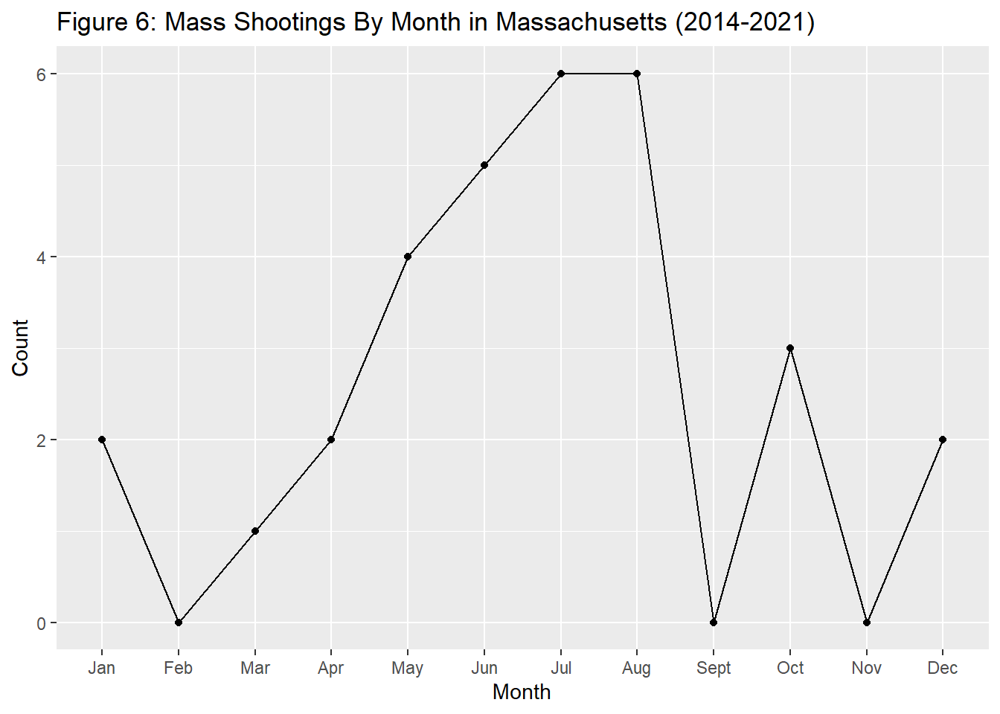
#Distribution of shootings by month in IL (better example of distribution than Mass given higher numbers of shootings)
filter(mass_shootings_all, state=="Illinois") %>%
ggplot(aes(month))+geom_point(stat="Count")+geom_line(stat="count", group=1)+labs(title="Figure 7: Mass Shootings By Month in Illinois (2014-2021)", x="Month", y="Count")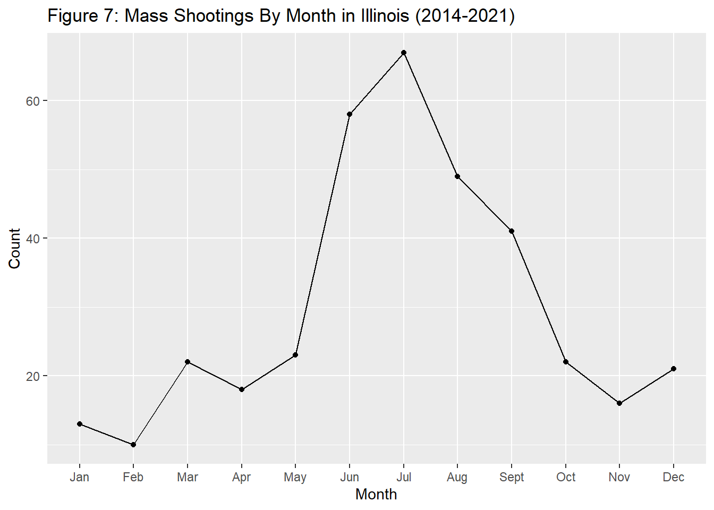
#creating month distribution by state. This table DOES NOT preserve the months where the count=0 but easier to visualize patterns than with histogram
#remove x-axis values to reduce clutter
ggplot(mass_shootings_all, aes(month))+geom_line(stat="count", group=1)+ facet_wrap(~state, scales = "free_y")+theme(strip.text = element_text(size=6))+labs(title="Figure 8: Mass Shootings by Month Across U.S. States (2014-2021)")+theme(axis.text.x=element_blank(), axis.ticks.x=element_blank())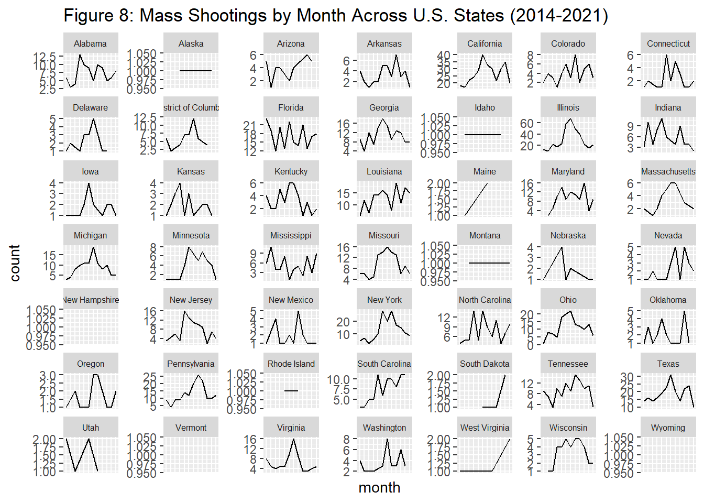
#creating month distribution by state. This table DOES preserve the months where the count=0
ggplot(mass_shootings_all, aes(month))+geom_histogram(stat="count")+ facet_wrap(~state, scales = "free_y")+theme(strip.text = element_text(size=6))+labs(title="Figure 9: Mass Shootings by Month Across U.S. States (2014-2021)", x="Month", y="Count")+theme(axis.text.x=element_blank(), axis.ticks.x=element_blank())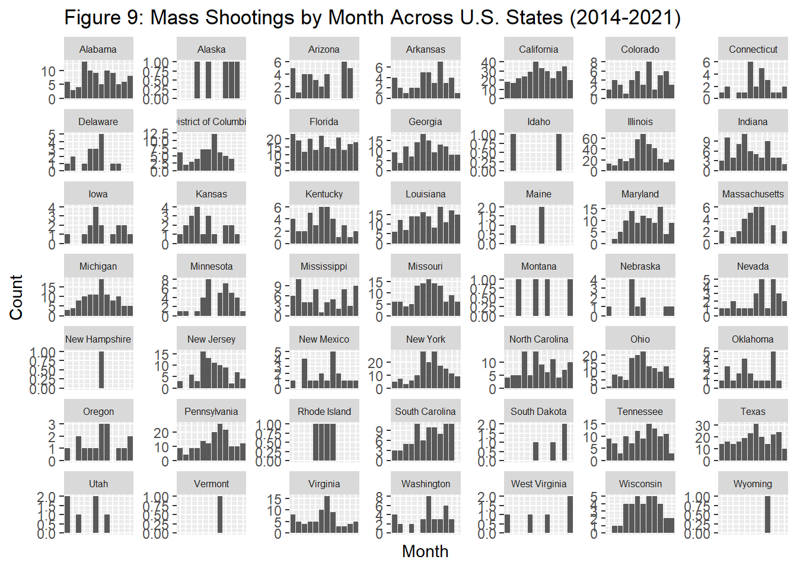
Figure 4 : Florida does not appear to follow the national trend in mass shootings mainly occurring during the summer.
Figure 5 : Filtered data set does not have rows for months where the count of mass shootings is equal to zero. I remake this graph in Figure 6.
Figure 6 : Corrected MA graph which preserves months where count=0. Seems to more closely follow the national trend.
Figure 7 : Illinois might provide a better example to analyze seasonal variation than MA given the larger number of mass shootings in IL/larger population. The distribution of mass shootings by month in IL very closely follows the national trend.
Figure 8 : Line graph for every U.S. state. Unfortunately, we run into the same problem as for MA, months where count=0 for particular states are omitted from the graph.
Figure 9 : To more easily see what is going on at the month level, I include a histogram which preserves months where the count=0. There is a wide variety in distribution of shootings by month based on state. However, it appears that states which are generally hotter year round (FL, TN, LA) do not tend to conform to the national trend as well, while states with more seasonal weather variation (MA, NY, IL) more closely follow the national trend.
Creating a New Variable
There definitely appears to be a correlation between season on the occurrence of mass shootings. If there are more mass shootings based on opportunity (i.e. more outdoor gatherings, people are more likely to leave the house) in the summer, we would expect more shootings to occur outside during the summer. If it is based on irritability due to the heat, we might not see a big difference in shootings occurring inside versus outside in the summer versus winter. In other words do most shootings during summer months occur outside? Are there more shootings in July because they are occurring outside, because there are more outdoor gatherings?
Below I create a new variable “location” predicting whether the shooting occurred “inside” or “outside” based on the wording of the address the shooting occurred at.
#creating a new variable column "location" to denote if incident was likely inside or outside based on address column. detects presence of "outside words" or if a address string starts with a number.
outside_words<-c("block", "Block", "corner", "and", "of")
mass_shootings_all<-mass_shootings_all%>%
mutate(location=case_when(
str_detect(address,paste0(outside_words, collapse="|"))~ "outside",
str_starts(address, "[0-9]") ~ "inside",
TRUE ~ "outside"))
#New column location versus addresses
mass_shootings_all %>%
select(address, location)# A tibble: 3,393 × 2
address location
<chr> <chr>
1 Poydras and Bolivar outside
2 8800 block of South Figueroa Street outside
3 4000 block of May Street outside
4 2500 block of Summit Avenue outside
5 18th and Pine outside
6 260 Oxford Drive inside
7 Charlevoix and Philip outside
8 191 Lake Rd inside
9 5700 block of South Green Street outside
10 4034 N Washington Blvd inside
# … with 3,383 more rows
# ℹ Use `print(n = ...)` to see more rows#Plotting inside versus outside shootings by month
ggplot(mass_shootings_all, aes(x=month, group=location, color=location))+geom_point(stat="count")+geom_line(stat="count")+labs(title="Figure 10: Location of Mass Shootings by Month (2014-2021)")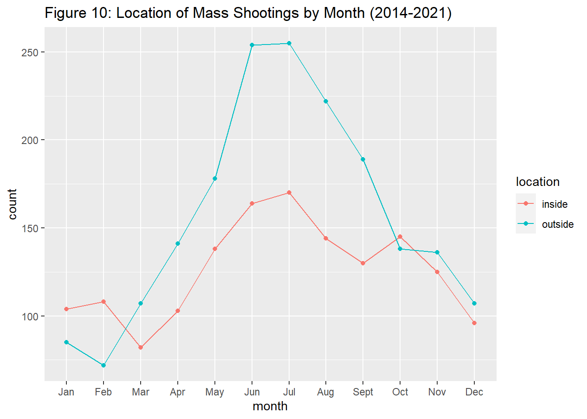
#how does COVID-19/years affect the number inside versus outside shootings
ggplot(mass_shootings_all, aes(x=Year, group=location, color=location))+geom_point(stat="count")+geom_line(stat="count")+labs(title="Figure 11: Location of Mass Shootings by Year (2014-2022)")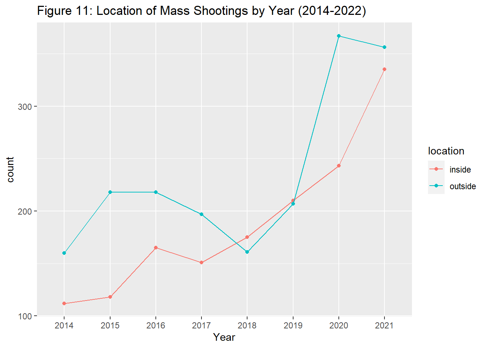
Figure 10 : It appears that there are significantly more shootings occurring outside during the summer months, however, indoor shootings too increase during the summer months, suggesting that multiple factors (besides opportunity) could be contributing to the increase in shootings during the summer months.
Figure 11 : While the indoor/outdoor lines are generally very similar, it is interesting looking at the disparity in indoor/outdoor shootings in 2020, as it appears there are significantly more outside shootings in 2020, possibly given offices, schools, and other “indoor” settings were closed or at limited capacity for much of the year.
Does the Severity of Shootings Correlate with Seasonality?
Next, I will analyze how many people are shot or killed during mass shootings, and if seasonality also affects severity.
First I will create a new variable, “number_shot”, because I believe this a better measure of severity of a shooting than number killed or number injured alone. Number_shot is a better measure of intention of the shooter (how many people the shooter intended to kill/affect), however this is still a limited measure as skill/how good the shooters aim is may affect if he/she makes their intended impact.
Because there is also large variability in the number shot, I created a new variable, severity, with categories based on the number of people shot (low, mid, and high severity). I chose <9 shot as low severity 10-29 as mid severity, and 30+ as high severity based on the number of distinct values of number_shot. This variable is still difficult to work with, given the majority of mass shootings only involve four victims. However, it is useful for weeding out the lower severity shootings to see trends in the higher severity shootings where 10 or more people are killed. I chose 30+ as high severity as there are few with over 30 people shot so this seemed like a logical threshold for high severity (as they also go way beyond 30 shot, one incident, involving 500 people shot).
#creating a new column/variable to measure severity based on above variables, number_shot= number_killed+number_injured
mass_shootings_all<-mass_shootings_all %>%
mutate(number_shot= number_injured+number_killed)
#Looking at distinct values for new variable
distinct(mass_shootings_all, number_shot) %>%
arrange(number_shot)# A tibble: 29 × 1
number_shot
<dbl>
1 4
2 5
3 6
4 7
5 8
6 9
7 10
8 11
9 12
10 13
# … with 19 more rows
# ℹ Use `print(n = ...)` to see more rows#creating a new variable, severity, by categorizing the number shot into low, mid, and high severity
mass_shootings_all<-mass_shootings_all %>%
mutate(severity= case_when(number_shot <= 9 ~ "low",
number_shot >= 10 & number_shot <= 29 ~ "mid",
number_shot >= 30 ~ "high"))
mass_shootings_all# A tibble: 3,393 × 12
incide…¹ incident…² Year month state city_…³ address numbe…⁴ numbe…⁵ locat…⁶
<dbl> <date> <chr> <fct> <chr> <chr> <chr> <dbl> <dbl> <chr>
1 271363 2014-12-29 2014 Dec Loui… New Or… Poydra… 0 4 outside
2 269679 2014-12-27 2014 Dec Cali… Los An… 8800 b… 1 3 outside
3 270036 2014-12-27 2014 Dec Cali… Sacram… 4000 b… 0 4 outside
4 269167 2014-12-26 2014 Dec Illi… East S… 2500 b… 1 3 outside
5 268598 2014-12-24 2014 Dec Miss… Saint … 18th a… 1 3 outside
6 267792 2014-12-23 2014 Dec Kent… Winche… 260 Ox… 1 3 inside
7 268282 2014-12-22 2014 Dec Mich… Detroit Charle… 1 3 outside
8 282186 2014-12-22 2014 Dec New … Webster 191 La… 4 2 inside
9 267721 2014-12-22 2014 Dec Illi… Chicago 5700 b… 0 5 outside
10 266570 2014-12-21 2014 Dec Flor… Saraso… 4034 N… 2 2 inside
# … with 3,383 more rows, 2 more variables: number_shot <dbl>, severity <chr>,
# and abbreviated variable names ¹incident_id, ²incident_date,
# ³city_or_county, ⁴number_killed, ⁵number_injured, ⁶location
# ℹ Use `print(n = ...)` to see more rows, and `colnames()` to see all variable names#2D histogram, depicting incidents by year based on number killed, and a count for how many incidents in a particular year
mass_shootings_all %>%
filter(number_shot<100) %>%
ggplot(aes(Year, number_shot))+geom_bin2d()+labs(title="Figure 12: Mass Shootings by Number of People Killed or Injured (2014-2021)*", caption="*Shootings with over 100 killed/injured are exluded for readability of plot", y="Number Shot")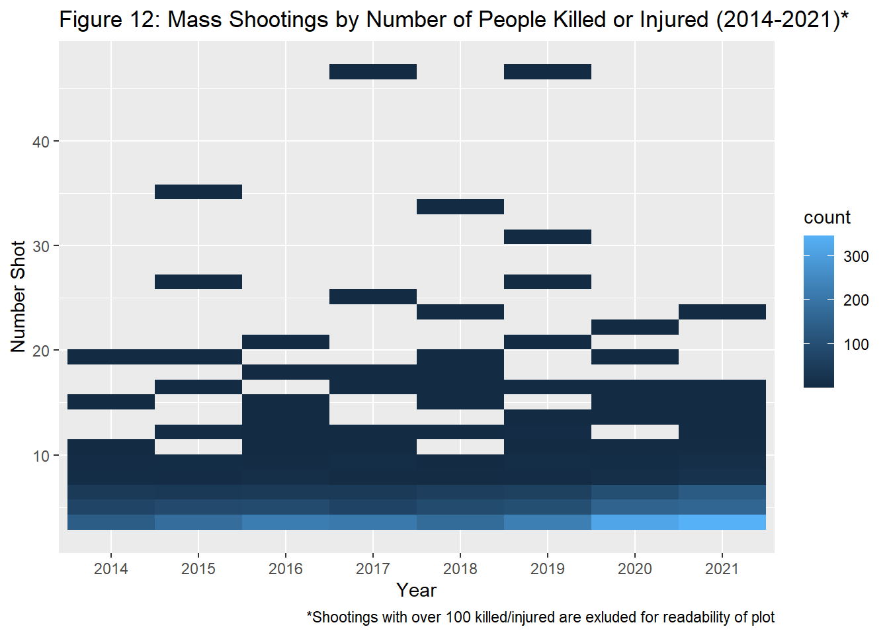
#Creating line graph for severity
mass_shootings_all %>%
ggplot(aes(x=month, group=severity, color=severity))+geom_point(stat="count")+geom_line(stat="count")+labs(title="Figure 13: Severity of Mass Shootings by Month (2014-2021)", x="Month", y="Count")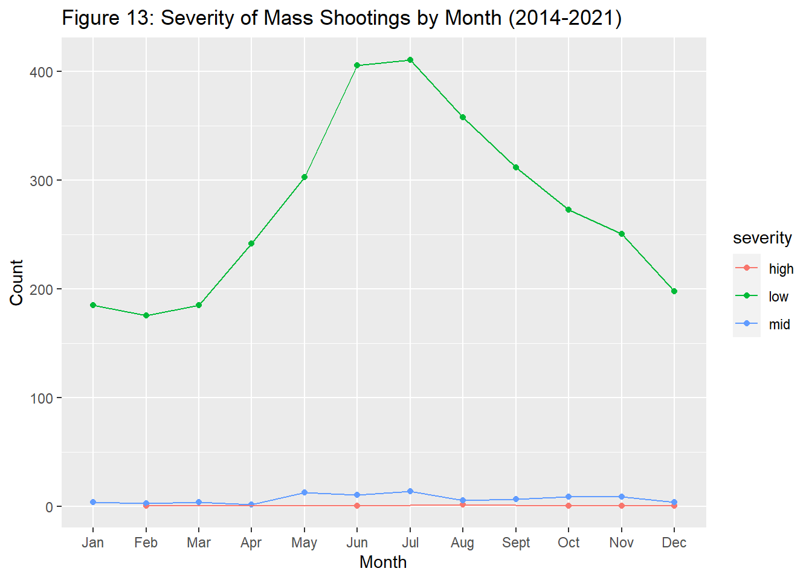
#removing "low" from severity line graph to more easily visualize trends for mid and high severity shootings
mass_shootings_all %>%
ggplot(aes(x=month, group=severity, color=severity))+geom_point(stat="count")+geom_line(stat="count")+labs(title="Figure 14: Severity of Mass Shootings by Month (2014-2021)*", caption="*Low severity shootings excluded from this graph for readability", x="Month", y="Count")+ylim(0, 20)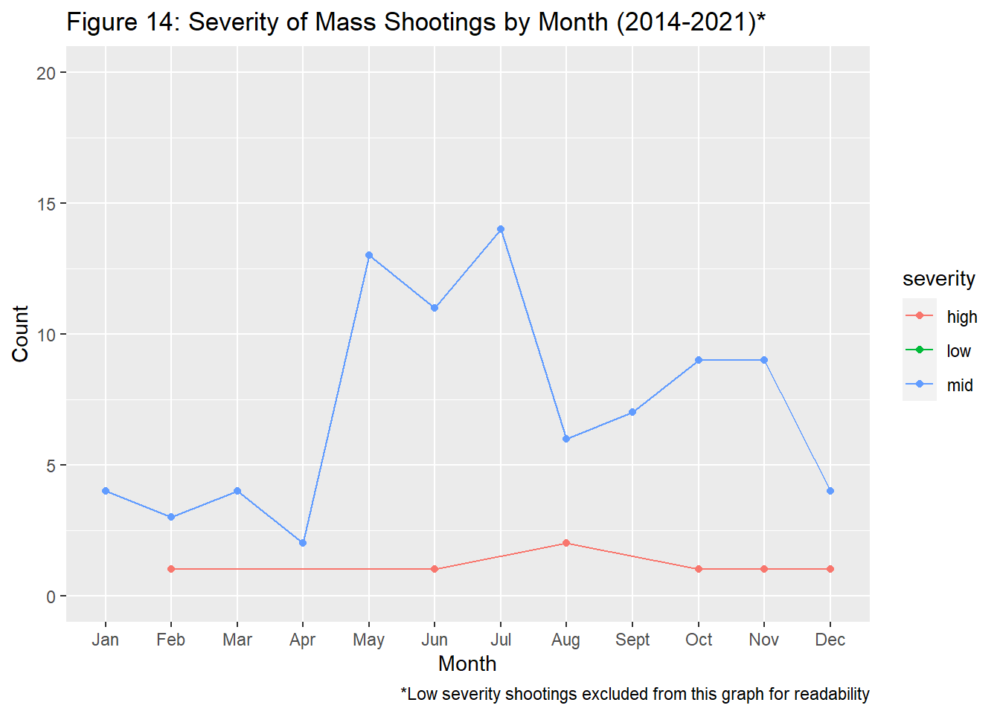
#Totaling the number of people killed in mass shootings by month
mass_shootings_all_month_sum<-mass_shootings_all%>%
group_by(month) %>%
summarise(total_shot=sum(number_shot))
#Plot based on above sum total
ggplot(mass_shootings_all_month_sum)+
geom_line(aes(x=month, y=total_shot, group=1))+ geom_point(aes(x=month, y=total_shot, group=1))+labs(title="Figure 15: Total Number of People Shot or Killed in Mass Shootings by Month (2014-2021)", x="Month", y="Total Shot")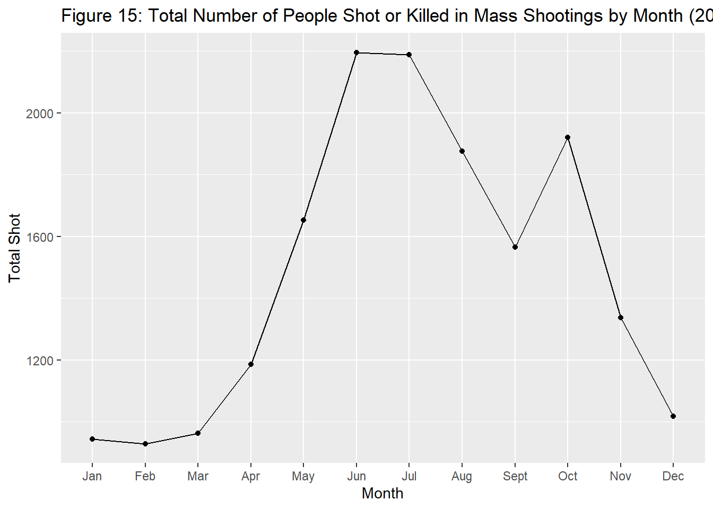
#Creating interacting scatter plot with ggplot-ly
p1<-filter(mass_shootings_all, number_shot<100) %>%
ggplot(aes(x=incident_date, y=number_shot))+geom_point(size=0.8)+labs(title="Figure 16: Shootings 2014-2021", x="Incident Date", y="Total Shot")
p1<-ggplotly(p1)
p1Figure 12 : this 2d plot helps depict trends in the number shot over time. For instance in 2020-2021, there appears to be a higher count of shootings where less than 10 people are shot, however there does not appear to be an increase in shooting with a higher number of people shot over time.
Figure 13 : This graph shows that low severity shootings appear to follow seasonal trends, but it is difficult to visualize low and mid severity shootings on this graph.
Figure 14 : This graph filters out mid and high severity shootings across months. Mid severity shootings seem to somewhat follow the national seasonality trend, but there does not seem to be much correlation with seasonality for the high severity shootings. However, we have fewer points in the high severity group, so again, this is difficult to draw conclusions from. From these graphs, it seems that low severity shootings follow the seasonality trend, but mid and high severity shootings may be less likely to conform to this trend.
Figure 15 : To look at severity, I also created a graph with the sum of individuals killed in mass shootings by month. Because the graph is not more “stretched out”/“taller, it seems that shootings occurring in the summer do not necessarily include more victims, there are just more shootings overall. The spike in October is likely due to the 2017 shooting in Las Vegas that killed 59 and injure 441 people on October 1st.
Figure 16 :Interactive plot with the number shot and the date. It is interesting to hone in on a particular incident and view when it occurred and how many people were affected. Shootings with over 100 killed/injured are excluded for readability of plot. 2 missing points: October 1, 2017, where 500 people were shot in Las Vegas, and June 12, 2016, where 103 people were shot in Orlando.
Conclusion
Overall it appears there is a seasonal impact on the number of mass shootings, but not necessarily the severity of mass shootings. June and July seem to have the greatest incidence of mass shootings. It is difficult to explain why more mass shootings occur during the summer months but opportunity is likely a contributing factor, given that more mass shootings occur outside during the summer versus inside. Opportunity also appears to be at play when analyzing mass shooting trends in the year 2020, as there is a massive increase in mass shootings in May and June following the lifting of heavy COVID-19 restrictions, and a much larger amount of outdoor compared to indoor shootings in 2020, perhaps due to a reduction of indoor gatherings during this year. Overall, it appears that mass shootings follow the seasonality trend of other violent crimes.
This analysis leaves me with many questions and thoughts about future research. For instance, it would be interesting to join this data with more information on the location, for instance if it occurred in a home, an office, an event, a school, or on the street and perhaps seeing if the distribution of shootings in each month are seasonally correlated at the setting level or perhaps there are other factors involved. I am also interested to see if particular events correlate with the timing of shootings (for instance the January 6 capitol attack, the war in Ukraine, or other national and international events). Finally, I am curious whether motive is correlated with seasonality, for instance are more spontaneous shootings likely to occur during the summer and more premeditated crimes less likely to follow this trend?
References
Gun Violence Archive (2014). Mass Shootings - 2014. https://www.gunviolencearchive.org/reports/mass-shootings/2014
Gun Violence Archive (2015). Mass Shootings - 2015. https://www.gunviolencearchive.org/reports/mass-shootings/2015
Gun Violence Archive (2016). Mass Shootings - 2016. https://www.gunviolencearchive.org/reports/mass-shooting?year=2016
Gun Violence Archive (2017). Mass Shootings - 2017. https://www.gunviolencearchive.org/reports/mass-shooting?year=2017
Gun Violence Archive (2018). Mass Shootings - 2018. https://www.gunviolencearchive.org/reports/mass-shooting?year=2018
Gun Violence Archive (2019). Mass Shootings - 2019. https://www.gunviolencearchive.org/reports/mass-shooting?year=2019
Gun Violence Archive (2020). Mass Shootings - 2020. https://www.gunviolencearchive.org/reports/mass-shooting?year=2020
Gun Violence Archive (2021). Mass Shootings - 2021. https://www.gunviolencearchive.org/reports/mass-shooting?year=2021
Gun Violence Archive (2022a). Mass Shootings - 2022. https://www.gunviolencearchive.org/reports/mass-shooting
Gun Violence Archive. (2022b, January 3). General Methodology. https://www.gunviolencearchive.org/methodology
Lauritsen, Janet J. and Nicole White. (2014). “Seasonal Patterns in Criminal Victimization Trends”. (June 2014). U.S. Department of Justice. 1-22. https://bjs.ojp.gov/content/pub/pdf/spcvt.pdf
Wickham, Hadley and Garrett Grolemund. (2017). R for Data Science. O’Reilly Media. https://r4ds.had.co.nz/